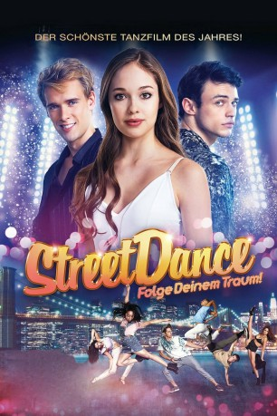

#12113 Streetdance - Folge deinem Traum!
Alternativ: High Strung Free Dance (Englischer Titel)
 
 IMDB-Wertung: 5.9 / 10
IMDB-Wertung: 5.9 / 10  Metascore: 0
Metascore: 0 
Tänzerin Barlow wünscht sich nichts mehr, als die Hauptrolle in einer Broadway-Show zu ergattern. Als der Star-Choreograph Zander, der sich nicht nur für Barlows Talent als Tänzerin interessiert, ihr eine Chance gibt, muss sie sich entscheiden: Soll sie das Angebot annehmen und Zanders Avancen nachgeben oder ihr Herz an den zurückhaltenden Pianisten Charlie vergeben?
Jahr: 2018
Dauer: 103 Minuten
FSK: 0
Land: Rumänien Studio: SquareOne EntertainmentTonspuren: DTS - ,
Untertitel: Deutsch,
Auflösung: 1080p (1920x808) Größe: 5150 MB
Genre: Musik, Liebe
Regisseur: Michael Damian
Drehbuch: Janeen Damian, Michael Damian
Soundtrack: Nathan Lanier
Darsteller:
 Jane Seymour als Oksana
Jane Seymour als Oksana- Thomas Doherty als Zander
- Harry Jarvis als Charlie
- Juliet Doherty als Barlow
- Ace Bhatti als Ravi
- Kika Markham als Rose
- Nigel Lythgoe als Theater Patron
- Manuel Pacific als Kid Diamond
- Jorgen Makena als Kayla Jordan
- Joshua Sinclair-Evans als Shane
- Nataly Santiago als Paloma
- Desmond Richardson als Sammy
- Connor Gormley als Connor
- Daniel Achim als Medic
- Breck Gallini als Peyton
- Dan Ursu als Stage Manager
- Giulia Nahmany als Press Agent
- Christopher Landry als Gilmore
- Ali Tomineek als Alex
- Kerrynton Jones als Keke
- Daniel Nuta als Maitre D
- Andreea Dumitrescu als Choreographer
- Sophie Tyler als Ava
- Dimitri Kleioris als Ryan
- Popescu Tina als Choreographer's Assistant
- Melissa Chapski als Emma
- Christopher 'Creesto' Rouyard als Creesto
Datei: X:\4-Tetralogie(M-Z)\StreetDance\Streetdance - Folge deinem Traum! (2018, FSK0, 1920x808).mkv seit 05.12.2019
Festplatte: HD Collection-3(N-Z)-6(A-Z)
 Es gibt insgesamt 7 Filme in der Gruppe '4-Tetralogie(M-Z)\StreetDance'
Es gibt insgesamt 7 Filme in der Gruppe '4-Tetralogie(M-Z)\StreetDance'